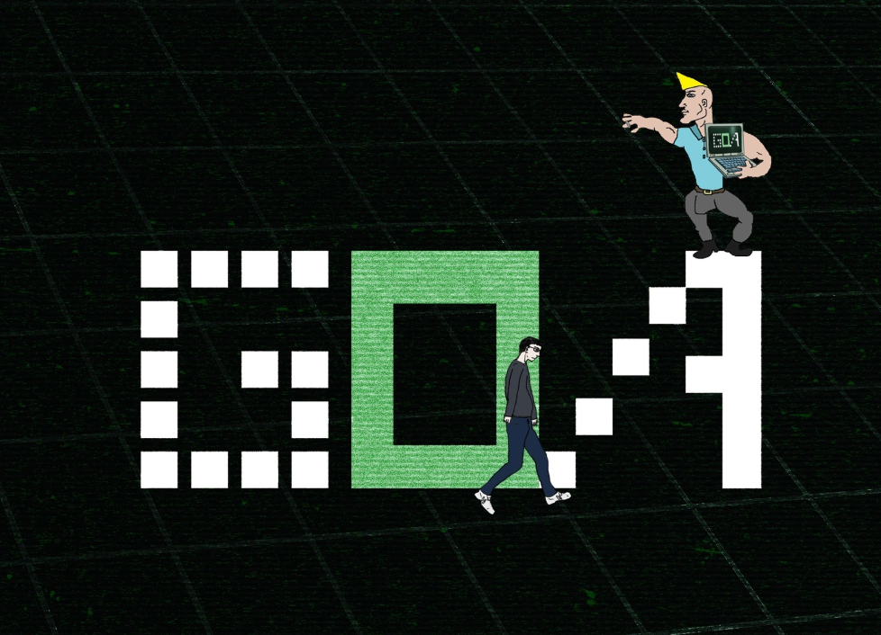

GOA (Global Online Academy) არის ონლაინ აკადემია, სადაც ბავშვები სწავლობენ და განვითარების მაქსიმალურ დონეს აღწევენ. აქ დიდ ყურადღებას ექცევიან დისციპლინას და პუნქტუალურობას.
ყველა საჭირო ენა გვეცოდინება პროგრამირებისთვის და ვისწავლით ადამიანთან კომუნიკაციას ყველაფერს რაც ცხოვრებაშიც გამოგვადგება და ასევე ჩვენ კარიერაშიც
არის კურსები და ჯგუფები, რომლებიც GOA-ში ხელმისაწვდომია. ზოგადად, არიან ჯგუფები ასაკის მიხედვით და სხვადასხვა დროს. 1 დღიანი: კვირაში ერთხელ. 2 დღიანი: სხვადასხვა ასაკისთვის, კვირაში ორჯერ (პასუხისმგებლობიდან გამომდინარე) 3 დღიანი: უფრო ხშირად კვირაში.
